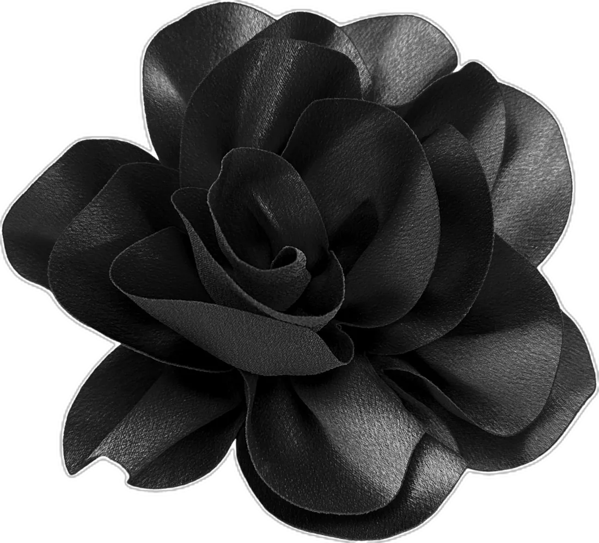
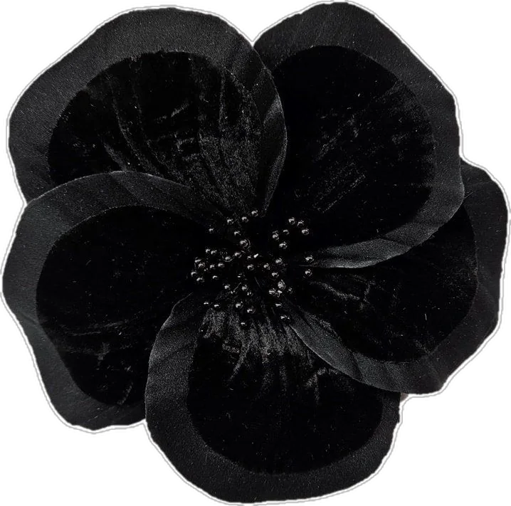
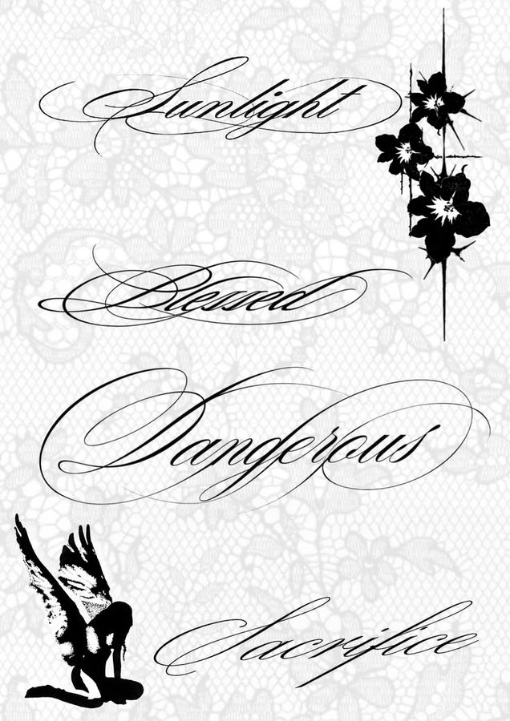
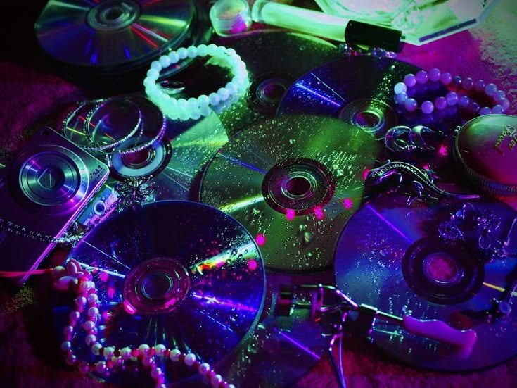
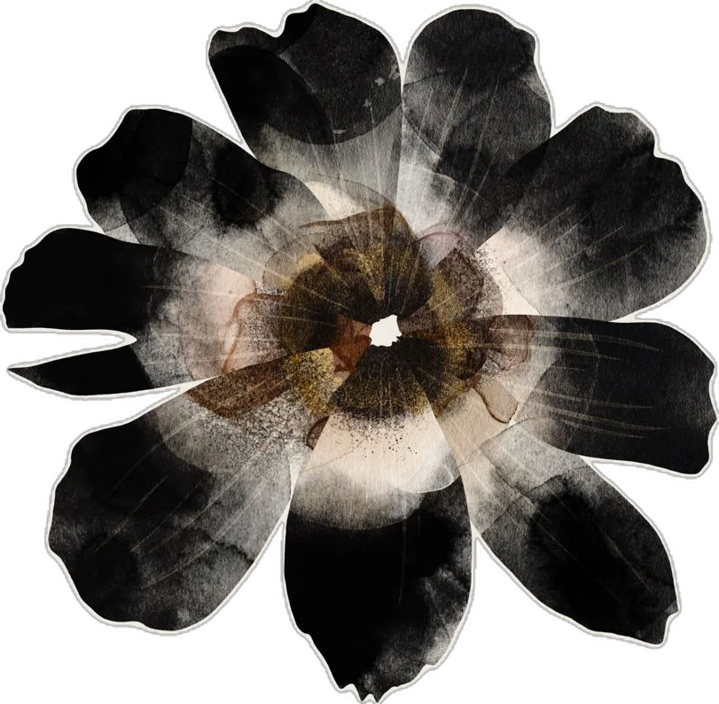

Dark florals, chrome, lace and silver, with one loud pop of pink. Getting dressed is just collage on a body.



reference, not mine

reference, not mine
Fit 01
Fit 02
Fit 03
Paper#F2EEE8
Navy#1E2450
Magenta#F1498C
Lavender#8F78C7
Characters
I start stories with a person, not a plot. Draw a file and see who walks in.
FILE_000Classified
...
Occupation
...
Wants
...
Wound
...
Secret
...
Setting
...
every click is a new stranger. some of them stay.

Films & Shows
What I watch, rewatch and rank. Newest first, because the order I found them in is its own kind of diary.
Films
Frankenstein (2025)
Challengers
Saltburn
Call Me by Your Name
Nightcrawler
Brokeback Mountain
My Own Private Idaho
Series
Fellow Travellers
Half Man
Squid Game
Alice in Borderland
Euphoria
Hannibal
Danganronpa
Shameless
Your turn
Rank your own favourites: add a title, then push it up or down until it feels right.
nothing ranked yet. start with your favourite.
Recipes & Bakes
Two staples. One for the afternoon, one that does its work while I sleep.
Afternoon
Banana bread
Ripe bananas, Greek yogurt, brown sugar and chocolate chips. The yogurt does the heavy lifting.
Makes
1 loaf, 10 slices
Tin
23 × 13 cm
Oven
175 °C, 55–60 min
Open the recipe
Ingredients
300 gvery ripe bananas (about 3), peeled
120 gGreek yogurt
120 glight brown sugar
80 mlsunflower oil
2eggs, about 100 g
5 mlvanilla extract
220 gplain flour
5 gbaking soda
2 gsalt
3 gground cinnamon
120 gchocolate chips, 20 g saved for the top
Method
Heat the oven to 175 °C (fan 160 °C). Grease a 23 × 13 cm loaf tin and line it with baking paper.
Mash the bananas with a fork until mostly smooth.
Whisk in the yogurt, brown sugar, oil, eggs and vanilla.
Mix the flour, baking soda, salt and cinnamon. Fold into the wet mix until just combined, with no dry streaks.
Fold in 100 g of the chocolate chips. Pour into the tin and scatter the last 20 g on top.
Bake for 55 to 60 minutes, until a skewer comes out with a few moist crumbs. If the top browns too fast, cover with foil after 35 minutes.
Cool for 15 minutes in the tin, then lift out onto a rack. Slice once it is mostly cool, after about 30 minutes.
Overnight
Cinnamon rolls
Shaped the evening before, proved in the fridge, baked warm in the morning. The slow way is the easy way.
Makes
12 rolls
Tin
23 × 33 cm
Oven
180 °C, 22–28 min
Rest
8–14 h in the fridge
Open the recipe
Dough
500 gstrong white bread flour
7 ginstant dried yeast
60 gcaster sugar
5 gsalt
240 mlwhole milk, lukewarm (about 35 °C)
60 gbutter, melted and cooled
1egg, about 55 g
Filling
80 gsoft butter
100 gdark brown sugar
12 gground cinnamon
Frosting
100 gcream cheese
40 gsoft butter
100 gicing sugar
15 mlmilk
5 mlvanilla extract
Method
Mix the flour, yeast, sugar and salt. Add the milk, melted butter and egg, then knead for 8 to 10 minutes by hand (5 to 7 in a mixer), until smooth and slightly tacky.
Cover and leave at room temperature for about 1 hour, until doubled.
Roll the dough out to a rectangle of about 30 × 40 cm.
Spread with the soft butter, then scatter over the brown sugar and cinnamon mixed together.
Roll up tightly from the long side. Cut into 12 equal slices, about 3.3 cm each.
Place the rolls cut side up in a greased 23 × 33 cm tin. Cover tightly and refrigerate overnight, for 8 to 14 hours.
Next morning, take the tin out of the fridge 45 minutes before baking. Heat the oven to 180 °C (fan 165 °C).
Bake for 22 to 28 minutes, until golden.
Beat the frosting ingredients until smooth and spread over the rolls while they are warm, not hot.